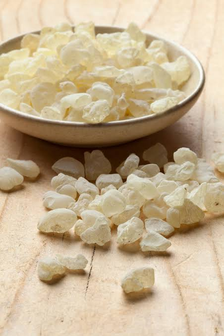

PRIMAL CORE ingredients: what is known and what is still being finalized
A transparent view of the PRIMAL CORE formula under development, ingredient roles, and what the final INCI list will confirm.

Transparency starts with a distinction: describing raw materials is different from declaring a finished cosmetic formula. PRIMAL CORE is under development. The ingredient count, percentages and final INCI list have not been finalized.
Which raw materials are currently being discussed?
The descriptions below explain general roles of raw materials featured in development materials. They are not a final label or formula certification, and they do not establish the performance of the finished product.
Beef tallow
An animal-derived fatty base that may contribute to a balm's rich texture and emollient feel. Purity, processing and the rest of the formulation matter to the finished result.
Jojoba oil
A raw material used in cosmetic formulations for its emollient feel and application properties. It is not presented here as a proven regulator of oil production or a guarantee that a product will not cause blemishes.
Chios mastic oil
An aromatic ingredient derived from mastic. Its presence does not establish therapeutic or antimicrobial action. The finished scent and suitability of the formulation still require assessment.
Beeswax
Beeswax has featured among the development ingredients, with a possible role in texture and film formation. Its inclusion in the final formula remains to be confirmed.
Vitamin E
This term can refer to different raw-material forms. The precise name, role and amount must come from the laboratory's final documentation. Vitamin E alone does not replace a product's safety assessment or preservation system.
Why are percentages and INCI not published yet?
A number is accurate only when it refers to an actual, finalized formulation. Likewise, a scientific name in a draft is not automatically the correct declaration for the final raw material. Proposed percentages or names should not be presented as an approved label.
Once the details are finalized, the ingredient list, directions and relevant information should agree across the website and packaging.
Fewer ingredients do not automatically mean greater safety
Origin and ingredient count are not enough to judge a cosmetic. The FDA explains that an ingredient's origin does not determine its safety. Natural aromatic materials can also trigger reactions in some people.
That is why this page does not promise allergy-free use, suitability for everyone or a particular shelf life. Those statements require evidence about the product itself, its intended use and its packaging.
Before first use
Follow the final label and try a small amount on a limited area first, following the directions. A small-area test cannot guarantee that an allergy will not occur. Seek professional advice about known allergies or an existing skin condition.
Joining the PRIMAL CORE list requests launch updates. It is not a pre-order, and no orders or payments are being accepted.
Sources and further reading
Read next
- Dry skin in men during winter: a simple care guide
- Dry hands and rough elbows: practical everyday care
- Beef tallow for the face: a guide to tallow balm
General cosmetic-care information, not diagnosis or treatment. Suitability depends on the finished product and its directions.